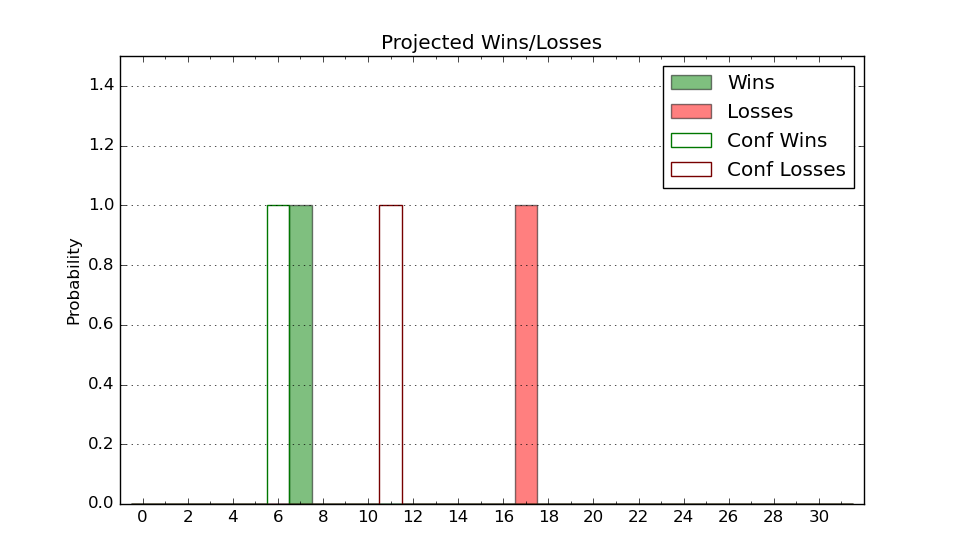

| Home | Game Probabilities | Conferences | Preseason Predictions | Odds Charts | NCAA Tournament |
| City: | Houston, Texas | |
| Conference: | Southland (5th)
| |
| Record: | 6-11 (Conf) 7-17 (Overall) | |
| Ratings: | Comp.: -17.0 (330th) Net: -17.0 (330th) Off: 95.4 (290th) Def: 112.4 (346th) SoR: 0.0 (156th) |
| Remaining | ||||||
|---|---|---|---|---|---|---|
| Date | Opponent | Win Prob | Pred. | |||
| 3/10 | (N) Tex A&M Corpus Chris (257) | 29.0% | L 70-76 | |||
| Previous | Game Score | |||||
| Date | Opponent | Win Prob | Result | Off | Def | Net |
| 11/9 | @Texas (16) | 1.0% | L 48-92 | 1.6 | -19.5 | -17.9 |
| 11/17 | @Texas A&M (64) | 2.8% | L 39-73 | -28.5 | 15.4 | -13.1 |
| 11/21 | @Denver (289) | 23.4% | L 61-74 | -8.8 | -4.1 | -12.9 |
| 11/24 | @Oklahoma (32) | 1.8% | L 40-57 | -21.2 | 38.2 | 17.0 |
| 12/4 | Oral Roberts (156) | 23.9% | L 67-85 | -8.4 | -7.0 | -15.3 |
| 12/11 | Rice (201) | 30.6% | L 73-88 | -9.7 | -4.0 | -13.7 |
| 1/6 | (N) Southeastern Louisiana (259) | 29.7% | L 81-90 | 11.7 | -23.6 | -12.0 |
| 1/7 | (N) New Orleans (254) | 28.8% | L 65-81 | -15.1 | 0.2 | -14.9 |
| 1/8 | (N) Incarnate Word (345) | 60.0% | L 50-60 | -29.1 | 6.4 | -22.8 |
| 1/15 | @McNeese St. (311) | 28.0% | L 75-78 | 14.4 | -5.0 | 9.5 |
| 1/20 | @Incarnate Word (345) | 44.8% | W 68-65 | -5.3 | 9.4 | 4.1 |
| 1/22 | @Tex A&M Corpus Chris (257) | 18.1% | W 77-71 | 10.0 | 16.5 | 26.4 |
| 1/27 | New Orleans (254) | 42.7% | L 66-77 | -15.0 | 1.9 | -13.1 |
| 1/29 | Nicholls St. (167) | 25.6% | L 61-73 | -11.3 | 4.8 | -6.5 |
| 2/3 | Northwestern St. (324) | 63.5% | L 87-97 | 7.6 | -31.3 | -23.7 |
| 2/5 | Southeastern Louisiana (259) | 43.8% | W 93-80 | 2.9 | 14.4 | 17.3 |
| 2/10 | @Northwestern St. (324) | 33.9% | W 76-69 | -0.2 | 21.1 | 20.9 |
| 2/12 | @Southeastern Louisiana (259) | 18.6% | L 84-89 | 8.8 | -2.2 | 6.7 |
| 2/19 | @Nicholls St. (167) | 9.2% | L 70-84 | 2.6 | -2.3 | 0.4 |
| 2/24 | Incarnate Word (345) | 73.4% | W 82-68 | 5.3 | 4.1 | 9.4 |
| 2/26 | Tex A&M Corpus Chris (257) | 43.0% | L 70-75 | 2.0 | -4.5 | -2.5 |
| 3/2 | @New Orleans (254) | 18.0% | L 74-75 | 19.3 | -4.2 | 15.2 |
| 3/5 | McNeese St. (311) | 57.0% | W 149-144 | 20.5 | -21.0 | -0.5 |
| 3/9 | (N) Incarnate Word (345) | 60.0% | W 74-64 | 21.8 | 2.4 | 24.1 |
| Stats & Trends | |||||
|---|---|---|---|---|---|
| Current | Day | Week | Month | Season | |
| Composite | -17.0 | +0.6 | +0.2 | +3.1 | -0.6 |
| Comp Rank | 330 | +2 | -3 | +12 | +13 |
| Net Efficiency | -17.0 | +0.6 | +0.2 | +3.5 | -- |
| Net Rank | 330 | +3 | -1 | +12 | -- |
| Off Efficiency | 95.4 | +0.6 | +0.9 | +3.6 | -- |
| Off Rank | 290 | +6 | +22 | +42 | -- |
| Def Efficiency | 112.4 | -0.0 | -0.7 | -0.1 | -- |
| Def Rank | 346 | -- | -24 | -15 | -- |
| SoS Rank | 331 | -11 | -30 | -29 | -- |
| Exp. Wins | 7.0 | +1.0 | +1.4 | +1.9 | -1.1 |
| Exp. Conf Wins | 6.0 | -- | +0.4 | +0.9 | -0.8 |
| Conf Champ Prob | 0.0 | -- | -- | -- | -7.8 |

| Advanced Stats | ||
|---|---|---|
| Stat | Value | Rank |
| Off Eff FG % | 0.468 | 291 |
| Off Ast Ratio | 0.122 | 307 |
| Off ORB% | 0.248 | 213 |
| Off TO Rate | 0.172 | 287 |
| Off FT Ratio | 0.357 | 47 |
| Def Eff FG % | 0.567 | 353 |
| Def Ast Ratio | 0.151 | 243 |
| Def ORB% | 0.281 | 247 |
| Def TO Rate | 0.164 | 117 |
| Def FT Ratio | 0.386 | 323 |